Трудно представить себе более распространенный в российской педиатрии миф, чем этот: если у ребенка высокая температура держится больше трех суток подряд, то ему нужен антибиотик. Есть ли хоть один родитель, который не сталкивался с таким мнением других родителей, с таким назначением педиатра? Наверное, нет.
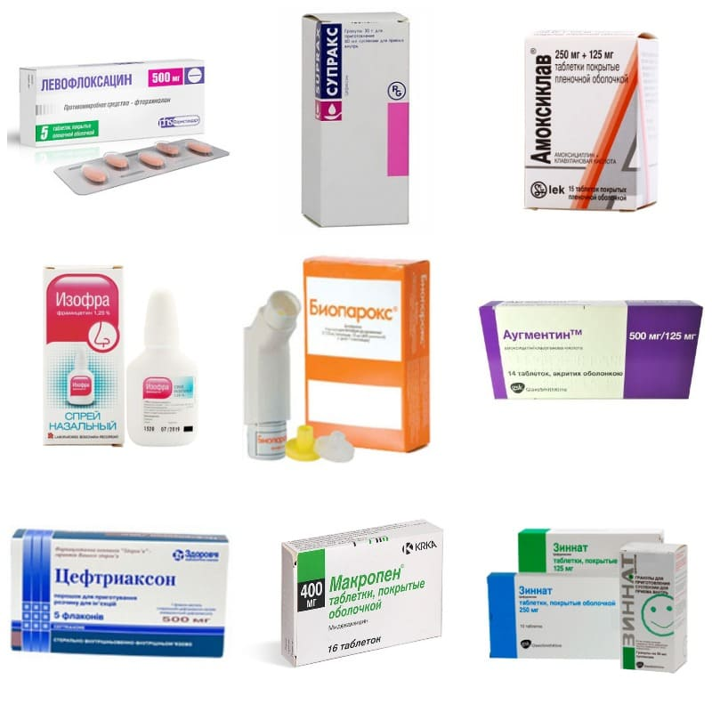
У лихорадки (повышения температуры более 37,5 °C) может быть множество причин, самые частые из них: вирусные инфекции, аутоиммунные заболевания, бактериальные инфекции.
Очень сложно передать доступным языком всю глубину пагубности такого подхода, но я все же попробую.
ПРИЧИНЫ ЛИХОРАДКИ
1) Вирусные инфекции. Разумеется, это самая частая причина лихорадки у детей. Вроде бы уже все знают, что антибиотики не действуют на вирусы, однако часто можно встретить мнение, что раз «так долго» лихорадит (3 или 5 дней), то уже точно присоединилась бактериальная инфекция и без антибиотика не обойтись. На самом деле давность лихорадки сама по себе не может являться основанием для назначения антибиотика. Нет такого количества дней, после которых инфекцию можно автоматически признать бактериальной. Да, чем дольше лихорадит ребенка, тем выше риск того, что мы что-то упускаем, где-то есть бактериальный очаг воспаления, и все же давать антибиотик вслепую – ошибка. Главная проблема такой тактики в том, что даже если антибиотик реально необходим, врач не понимает, что он лечит. Но об этом чуть ниже.
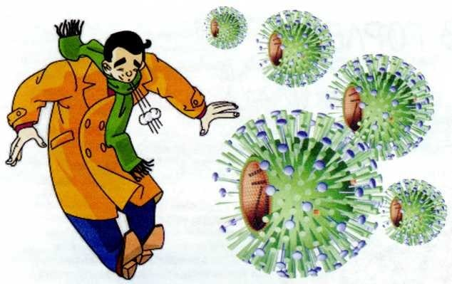
а) Классическим примером вирусной инфекции является ОРВИ . При ОРВИ ребенка может лихорадить и 1, и 3, и 5, и 7 дней подряд, иногда даже дольше. С каждым днем лихорадки врач должен все пристальнее осматривать ребенка, назначить некоторые анализы, чтобы не пропустить большую проблему. И с каждым днем лихорадки у любого врача чешутся руки дать антибиотик, потому что и клинически, и морально, и юридически последствия запоздалого старта антибиотикотерапии иногда куда серьезнее, чем последствия антибиотикотерапии вхолостую.
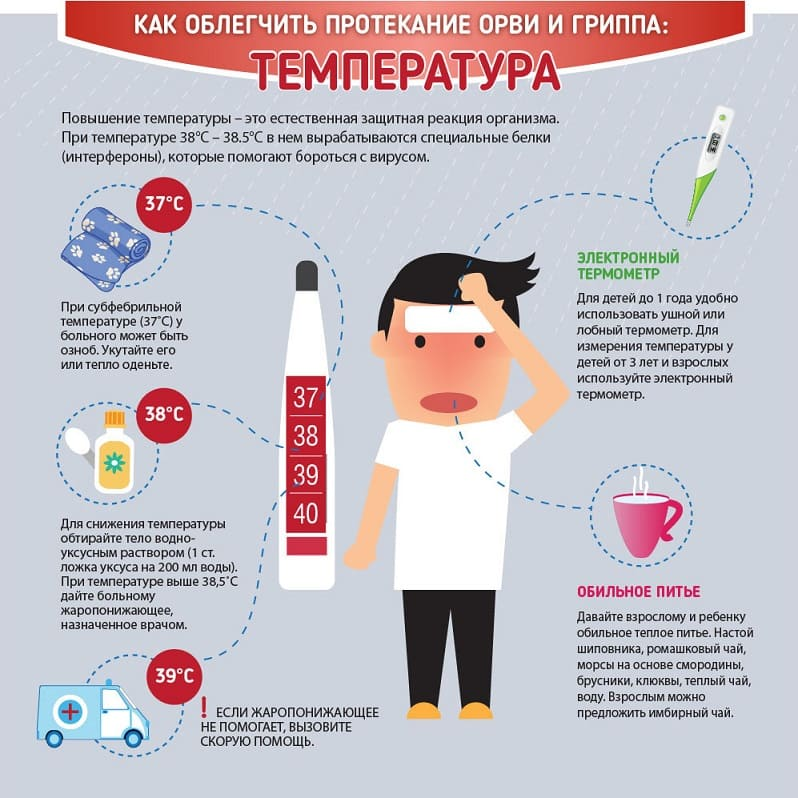
Главный подвох тут вот в чем: пока врач не видит очаг бактериальной инфекции, его, скорее всего, и нет. Очень и очень велик риск того, что сегодня мы дадим антибиотик, а завтра ребенок сам пойдет на поправку, по чистому совпадению, потому что время пришло. И что тогда делать с антибиотиком? Отменять, не допив курс? Допивать курс до конца, понимая, что он заведомо не нужен? Допивать, боясь, что, а вдруг все-таки лихорадка ушла именно из-за антибиотика?
Итак, первый огромный недостаток такого подхода: НЕОПРЕДЕЛЕННОСТЬ С ДИАГНОЗОМ И ТАКТИКОЙ.
б) Детская розеола. Очень частая вирусная инфекция у дошкольников, особенно у детей с шести месяцев до двух лет . Для этой болезни типичным является такое течение: 3–5 дней высокой лихорадки почти без других симптомов, затем лихорадка сама снижается, а через сутки от нормализации температуры появляется обильная розеолезная сыпь.
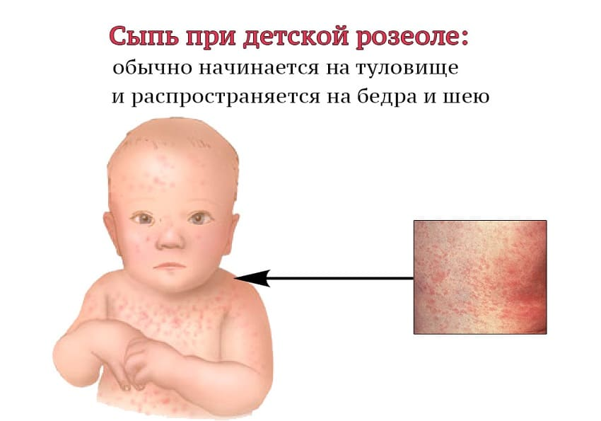
И о чем в первую очередь подумают родители и недоученный педиатр, угадайте? Правильно: об аллергии на антибиотик. На титульном листе амбулаторной карты ребенка красной ручкой пишут «аллергия на…» и этот антибиотик больше ребенку не дают. А это значит, что в следующий раз, когда антибиотик реально будет необходим и идеально будет подходить именно тот, который написан на карте, никто уже не решится его дать, и будут давать другие препараты, делая терапию менее рациональной.
Это второй недостаток такого подхода: СОВПАДЕНИЯ, КОТОРЫЕ СОЧТУТ ПОБОЧНОЙ РЕАКЦИЕЙ НА АНТИБИОТИК.
в) Инфекционный мононуклеоз (ИМ). Еще одна вирусная инфекция, дающая лихорадку от одной до трех (!) недель подряд. Мало того, что ИМ не требует лечения антибиотиками, антибиотики при ИМ еще и вызывают типичное осложнение: яркая стойкая сыпь по всему телу. Если антибиотик не будет назначен при ИМ, не будет и сыпи: а значит, это прямой побочный эффект антибиотика.
Давайте здесь вспомним и другие типичные побочные эффекты антибиотико-терапии: диареи, истинные (а не как при розеоле или при инфекционном мононуклеозе) аллергические сыпи, более тяжелые аллергические реакции (анафилаксия, отек Квинке, синдром Стивенса – Джонсона и т. д.), боли в животе, тошнота, развитие антибиотикорезистентности и др.
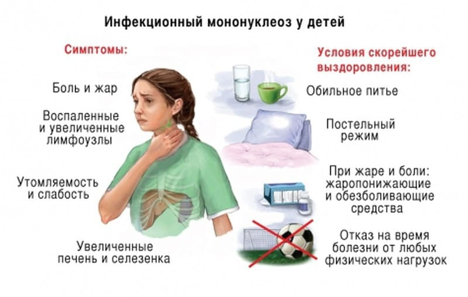
Итак, третий недостаток: ИСТИННЫЕ ПОБОЧНЫЕ ЭФФЕКТЫ АНТИБИОТИКОТЕРАПИИ.
Кто-то может возразить: побочные эффекты могут возникнуть и в том случае, когда антибиотик назначен совершенно правильно и в нем есть реальная необходимость. Верно, но одно дело рисковать, понимая ради чего ты рискуешь, и совсем другое – рисковать без всякой необходимости. Это как выпрыгнуть из окна третьего этажа: одно дело прыгнуть просто так (на «слабо», например) и совсем другое, если дом объят пожаром и другого пути спастись нет. Мы в медицине называем это оправданным риском.
2) Аутоиммунные заболевания. Почти никогда не требуют лечения антибиотиком.
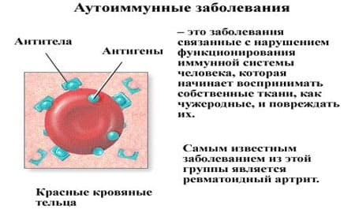
а) Болезнь Кавасаки. Системное заболевание, которое обычно протекает с высокой лихорадкой продолжительностью от пяти дней до нескольких недель. Это относительно редкая болезнь, и ее симптомы очень и очень напоминают симптомы бактериальной инфекции (сыпь на коже может имитировать скарлатину, огромные цифры СОЭ, С-реактивного белка и лейкоцитоз – намекать на бактериальное воспаление и т. д.), поэтому пациент с болезнью Кавасаки почти обречен получить антибиотик. А значит, неоправданный риск побочных реакций.
б) Синдром Маршалла (PFAPA). Тоже довольно редкая болезнь, относящаяся к группе периодических синдромов. Проявляется приступами лихорадки, афтами во рту, покраснением в зеве и увеличением шейных лимфоузлов, но самое интересное в ней – именно периодичность приступов: они повторяются через равные интервалы времени, около 30 дней, и длятся 3–5 суток. Интервалы настолько стабильны, что родители нередко могут предсказать появление нового приступа с точностью до суток. Разумеется, синдром Маршалла не лечится антибиотиками.
У меня в практике было два таких ребенка, и надо ли говорить, что при каждом приступе PFAPA до обращения ко мне эти дети получали курсы антибиотиков, ежемесячно, по 12 курсов в год! Вред все тот же.
3) Бактериальные инфекции. Думаете, тут все просто? Как бы не так!
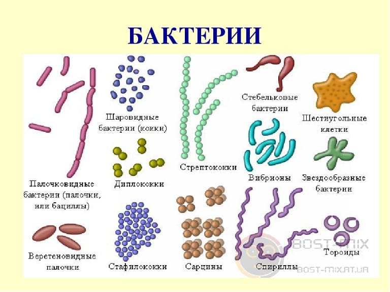
а) Воспаление легких (пневмония). Развивается обычно под конец ОРВИ, дает «вторую волну» лихорадки или затяжную лихорадку.
Что будет, если педиатр назначит антибиотик на третий (ну или пятый) день повышенной температуры? Ведь все же вроде хорошо: вот бактериальная инфекция, вот антибиотик. Но, во-первых, он не сделал снимок легких до старта антибиотикотерапии,
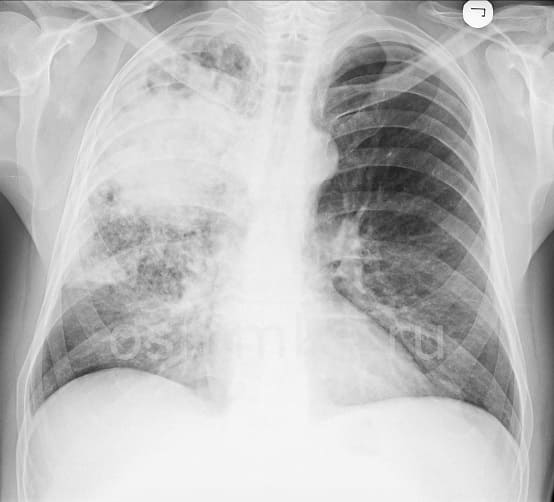
во-вторых, он наверняка назначит слишком короткий курс терапии (он же не знает, что он лечит), в-третьих, он не сделает и второй, контрольный, снимок легких, а значит, рискует пропустить осложнения пневмонии, в-четвертых, если он пропустит осложнения, а потом через какое-то время они всплывут при рентгенографии грудной клетки, выполненной по другому поводу, это вызовет серьезную путаницу, ведь в карте ребенка не будет указаний о перенесенной ранее пневмонии, и т. д. Вред здесь – неопределенность с диагнозом и тактикой.
б) Инфекции мочевыводящих путей (ИМВП).
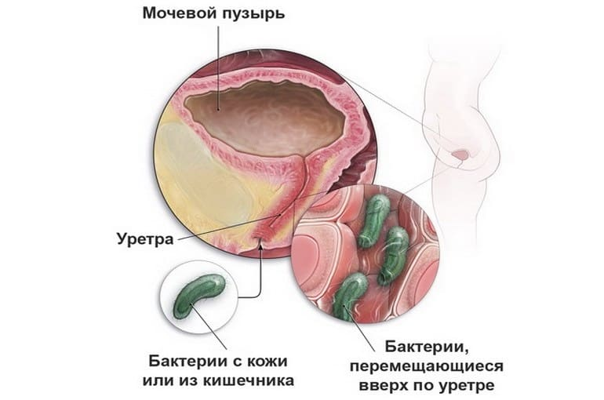
Давайте представим, что у ребенка пиелонефрит, лихорадка длится три дня и педиатр назначает ему антибиотик вслепую. Здесь вреда еще больше, чем при пневмонии. Дело в том, что обязательным и очень важным условием лечения ИМВП является проведение посева мочи на стерильность ДО НАЧАЛА антибиотикотерапии.
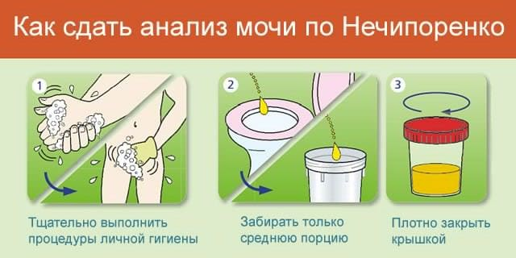
Этот анализ нужен, чтобы понять, с каким именно возбудителем мы имеем дело, в каком количестве он присутствует и к каким антибиотикам он чувствителен. Если ИМВП не тяжелая, мы вполне можем не лечить ребенка до получения результатов посева мочи (3–5 дней), если тяжелая, то нужно сдать анализ мочи и сразу назначить антибиотик широкого спектра действия, а когда придут результаты, посмотреть, угадали ли мы с антибиотиком, и если нет, то сменить на более подходящий. Как только мы дадим первую дозу антибиотика, посев брать уже бессмысленно. И начинаются все те же проблемы: неверифицированный диагноз, слишком короткий курс антибиотика, весьма вероятно, ошибка с выбором антибиотика, отсутствие адекватного диспансерного наблюдения после перенесенной ИМВП и т. д.
в) Средний отит.
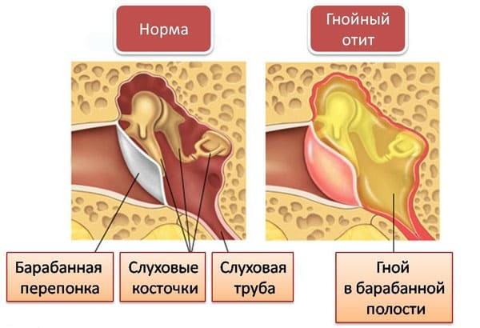
Если врач назначает антибиотик только потому, что третий день лихорадки, не проводя отоскопию,
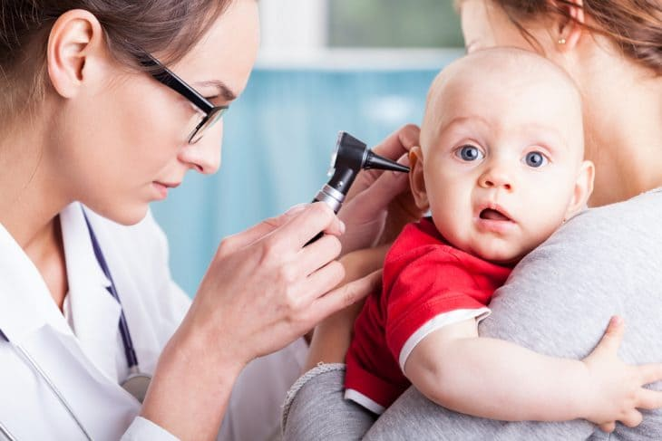
и даже если у этого ребенка действительно средний отит, то, во-первых, не каждый средний отит требует лечения антибиотиком, во-вторых, он опять почти наверняка ошибается с длительностью назначения антибиотика, а в-третьих, наверняка ошибется и с дозировкой, потому что, когда доктор назначает вслепую, он назначит 20–40 мг/кг/сут. амоксициллина, а для отитов рекомендовано 70–90, то есть доза будет заниженной, а это означает высокий риск рецидива отита, причем уже с флорой, устойчивой к амоксициллину.
Понимаете, к чему я веду?
Кстати, многие родители, которые пытаются бороться с избыточным назначением антибиотиков их детям, возлагают большие надежды на общий анализ крови: мол, нельзя назначать антибиотик, пока не убедились по крови, что инфекция бактериальная. Это верно, но лишь отчасти. Потому что, с одной стороны, есть целый ряд болезней, когда клиника очевидна, диагноз ставится без общего анализа крови и антибиотик должен быть назначен сразу (например, типичный анамнез + типичная отоскопическая картина отита = отит, нужен антибиотик; типичная сыпь + лихорадка + положительный стрептатест = скарлатина, нужен антибиотик, и т. д.). А с другой стороны, разделение инфекций на вирусные и бактериальные только по анализу крови очень сомнительная затея, есть ряд исследований, показывающих невысокую чувствительность и специфичность таких попыток. По-простому: слишком велик риск ошибиться, даже сдав анализ крови.
Ставку надо делать на хорошего врача, никакой анализ его не заменит.
1) Раздел «Прочее». Еще одна проблема очень быстро встает перед доктором, который любит назначать антибиотик с третьего дня лихорадки: проблема выбора. Амбулаторных (пероральных) антибиотиков совсем немного: пенициллины защищенные/незащищенные, цефалоспорины 1-2-3-го поколений, да макролиды 15/16-членные. Вот почти и всё, не разгуляешься. И если ребенок болеет часто, то уже на второй-третий раз доктор начинает повторяться, а это, с одной стороны, вызывает беспокойство и вопросы у родителей (недавно же его пили, опять его?!), а с другой стороны – доктора беспокоит совесть (не совсем еще забыта микробиология, что-то всплывает в памяти про резко возрастающий риск антибиотикорезистентности при частых повторах).
К чему это все приводит? К такой проблеме, как назначение «резервных» антибиотиков при рутинных проблемах, то есть доктор быстро переходит на всякие Супраксы/Цефиксимы (которые логично бы приберечь на более тяжелые случаи),
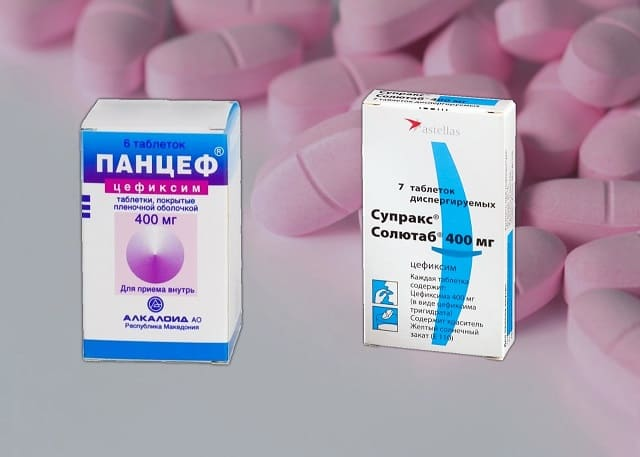
Клациды (которые надо бы оставить гастроэнтерологам на хелокобактер пилори, пока она еще отвечает хотя бы на Клацид),
Бисептолы (которые имеют сомнительную/избирательную эффективность и ряд нежелательных реакций) и т. д.
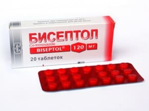
Так что же получается? Раз педиатры по-прежнему назначают антибиотики на третий день лихорадки, выходит, они все безграмотные и виноваты во всем? Отчасти да, именно низкий уровень образования врачей – главная причина того, что миф «антибиотик на третий день лихорадки» так стойко прижился в России. И все же виноваты не только они.
…Вот как много букв у меня написалось на эту тему. А ведь я взял только самые основные проблемы и примеры, старался не вдаваться в детали. Все в конечном итоге упирается в одно: педиатру надо знать педиатрию и стараться работать грамотно и честно, тогда 9 из 10 случаев, когда «хотелось назначить» антибиотик, вполне можно вылечить и без него.
А кто еще?
I) Организаторы здравоохранения. Совершенно бесчеловечная организация амбулаторной медпомощи, которая отводит по 10 минут на осмотр пациента, которая допускает дикие переработки врачей (по 50 и более пациентов в кабинете в день, по 30 и более вызовов на дом). Которая перегружает врачей бессмысленной бумажной и непрофильной работой. Которая оценивает этот каторжный труд в 20–30 тысяч рублей в месяц (если повезет).

К неграмотной организации работы врача нужно отнести также отсутствие качественных общенациональных клинических руководств, основанных на принципах доказательной медицины; отсутствие в кабинете педиатра экспресс-тестов на стрептококк и грипп, мочевых тест-полосок, быстрого доступа к анализу крови и рентгенографии легких (талончики – очереди – задержки результатов и т. д.), отсутствие у пациента возможности телефонной/текстовой связи со своим врачом (прямое следствие перегрузки врача).
Все это толкает педиатра перестраховываться и назначать антибиотик заранее, потому что так юридически безопаснее для самого врача.
II) Система контроля работы и наказаний врача. Постоянные жалобы, которые априори оборачиваются против доктора (какая бы чушь ни была в жалобе, будь добр написать унизительную объяснительную, а то и получить выговоры – штрафы – нервотрепки). Юридическая незащищенность врача, регулярные прецеденты, когда суды, не разобравшись, встают на сторону пациента. Все это толкает к перестраховочному и избыточному лечению: ведь когда антибиотик был назначен зря, никто не накажет врача; когда был назначен, но осложнение все равно развилось, врачу легче оправдаться; а вот когда антибиотик не был назначен и развилось осложнение, вот тут доктор основательно «попал», даже если он при этом действовал очень грамотно и последовательно.
III) Сами пациенты. Многие родители порой готовы скандалить, жаловаться, требовать и топать ногами при каждом поводе и без повода. А значит, сами не дают врачу доверять им, сами толкают его перестраховываться. Не щадят врача, толкают его к выгоранию.
Это они отказываются от прививок против пневмококка, коклюша, ХИБ-инфекции, ежегодных прививок против гриппа, а ведь если бы ребенок был привит от них, ему бы гораздо реже требовались антибиотики.

Это они не желают ничего слышать про естественные сроки течения болезней, хотят лишь эффекта «вот-прям-завтра-же», а не получив желаемого, заставляют врача приходить на дом ежедневно, продолжая давить на него и торопить его.
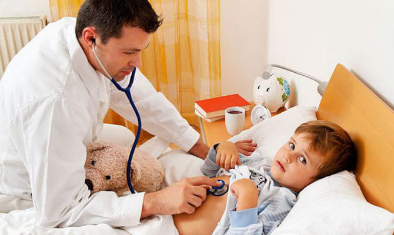
Это они не повышают свой уровень медицинской грамотности, а значит, не помогают врачу и своему ребенку.
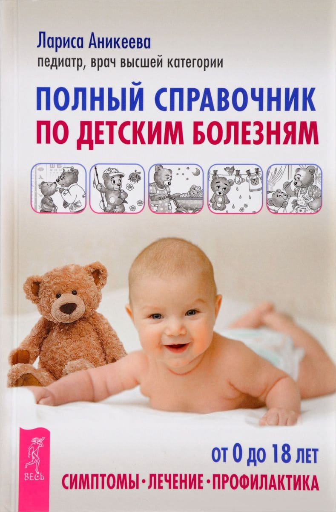
Да, не только врачам нужно учиться; чтобы водить автомобиль, надо пройти обучение и сдать экзамены, а чтобы ребенка растить, ничего не надо, само как-нибудь – разве это справедливо?
Всем будет гораздо лучше, если родители станут союзниками врача в борьбе с болезнями их малыша, а не пассивными наблюдателями и/или требовательными судьями.
IV) Недостаток образования врачей. И все же корень зла все равно в самих врачах, это альфа и омега. Будь у врача достаточные знания и достаточное желание помочь, он бы учил английский язык и читал бы международные гайдлайны, старался бы лечить пациентов по мировым стандартам. Он бы нашел способ приобрести эти самые мочевые тест-полоски, стрепта-тесты, пульсоксиметр, пикфлуометр, постарался бы наладить нормальную организацию лабораторных/инструментальных методов диагностики.
Он бы купил себе отоскоп и научился им владеть. Он бы направил пациента в обход бюрократических препятствий, если уж они в данный момент непреодолимы (пусть даже платно – многие пациенты с пониманием относятся к тому, что платно = быстрее и качественнее, так давайте хоть предлагать им выбор). Он бы дал возможность хотя бы тяжелым пациентам связаться с ним напрямую, в случае экстренной необходимости.
Он бы лучше вел разъяснительную работу с пациентами о важности прививок, и сам бы не давал ложных и необоснованных медотводов. Он бы (в стационаре) делал люмбальные пункции по адекватным показаниям, прописанным в международных гайдлайнах, а не когда ребенок уже при смерти, и своевременно выявлял бы менингиты у детей. Он бы освоил надлобковую пункцию и катетеризацию мочевого пузыря и гораздо точнее бы верифицировал ИМВП у детей раннего возраста. И так далее. Он бы мог сделать гораздо больше, чем делает сейчас.
…Вот такая невеселая глава получилась. В российской педиатрии сейчас масса проблем, не только в лечении антибиотиками. Но если не поднимать и не называть эти проблемы, то дело не начнет двигаться с мертвой точки никогда. Мир надо переделать – начнем с себя ©.
(Сергей Бутрий "Здоровье ребенка: современный подход")